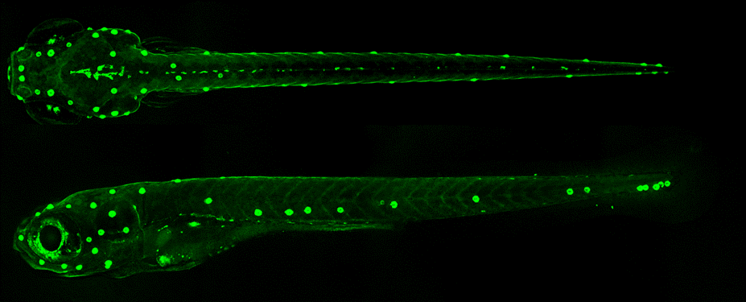
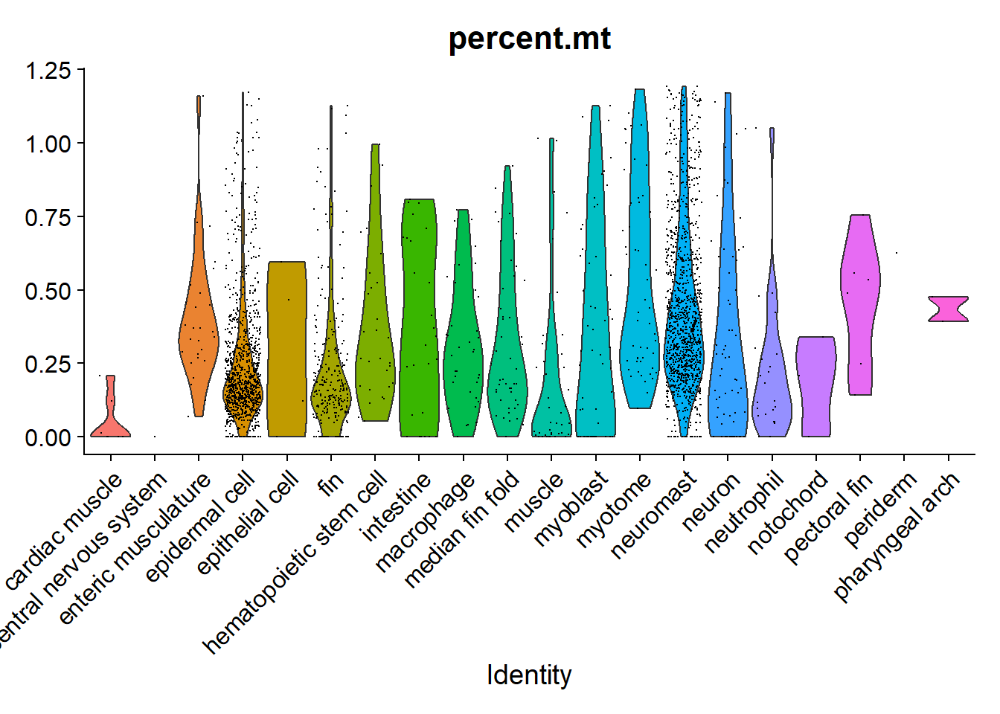
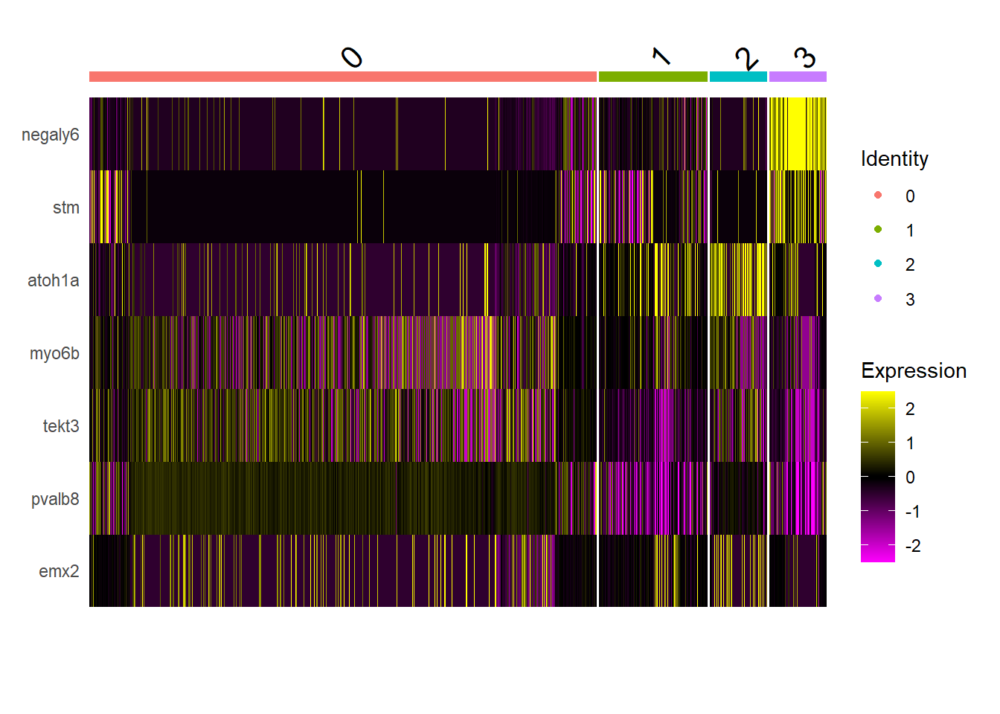

suppressPackageStartupMessages(library(Seurat))
library(tidyr)
library(readr)
suppressPackageStartupMessages(library(dplyr))
suppressPackageStartupMessages(library(magrittr))
library(stringr)
library(stats)
library("RColorBrewer")
library(ggplot2)
library(ggfortify)Clase 11 - 09 abril 2025
Cargando librerias
Cargamos varias librerias del tidyverse para hacernos más facil la vida con los dataframes. Cargamos Seurat para hacer la manipulacion de los datos de scRNA-seq.
Recuerden que si hace falta una librería, se puede instalar con el comando install.packages(““) y hay que poner el nombre de la librería entre comillas:
install.packages("ggfortify")Warning: Paket 'ggfortify' wird gerade benutzt und deshab nicht installiertCargando archivos
Los datos vienen del artículo (Kozak et al. 2020) donde se secuenciaron los transcriptomás de células del neuromasto de pez cebra por dos técnicas diferentes, concentrándonos en un tipo celular específico, las hair cells. Los archivos son open source y se pueden encontrar en SCRB y 10X Chromium.1

Hair cells
Acá quizás tengan que cambiar el path si los archivos no están dentro de una carpeta llamada “data”.
hc10x <- LoadSeuratRds("data/haircells10X_clase9.RDS")Support cells
sc10x <- LoadSeuratRds("data/supportcells10X_clase9.RDS")Hair cells con una tecnica de single cell alternativa
hcSCRB <- LoadSeuratRds("data/haircells1SCRB_clase9.RDS")Exploración
Los archivos ya fueron filtrados. En hc10x@metadata hay features extra para cada célula, por ejemplo, el número de transcritos expresados, el número de moléculas de RNA detectadas, y qué porcentaje de éstos pertenecen a transcritos mitocondriales, ribosomales, de hemoglobina o EGFP.
VlnPlot(hc10x, features = c("nFeature_RNA", "nCount_RNA", "percent.mt", "percent.ribo", "percent.hemo", "EGFP"), ncol = 3)
Algunas de las distribuciones están truncadas porque filtramos los valores extremos de acuerdo a valores de MADS, una especie de desviación estandard basada en la media, como se sugiere en https://www.sc-best-practices.org/preprocessing_visualization/quality_control.html#filtering-low-quality-cells
Adicionalmente, se corrigió el “background” de la sopa de RNA usando la libreria SoupX y se clasificaron algunas células como dobletes basado en el algoritmo de la librería scDblFinder. Para más info, ver la referencia anterior.
El score de dobletes correlaciona con la cantidad de RNA detectado y el número de genes.
#FeatureScatter(hc10x, feature1 = "log1p_nCount", feature2 = "log1p_nGenes")
hc10x@meta.data %>% ggplot(aes(log1p_nCount, log1p_nGenes, col = scDblFinder_score)) + geom_point() + theme_bw()La correción de SoupX sólo tiene sentido con técnicas basadas en microfluidos como 10X Chromium. La tecnica SCRB no involucra una “sopa”, la librería de cDNA se hace para cada célula individual y no hay ninguna célula en este dataset con un número suficientemente bajo de lecturas para calcular la sopa.
El cálculo de dobletes tiene más sentido porque las células del neuromasto son difíciles de disociar completamente. El porcentaje de dobletes correlaciona con el número de células porque es una función de la velocidad a la que pasan las células en la corriente de microfluidos, ya sea en el aparato de 10X o en el FACS (SCRB).
Porcentaje de dobletes en SCRB:
#Hair cells SCRB
(tab <- (hcSCRB@meta.data$scDblFinder_class %>% table)).
singlet doublet
178 6 #Porcentaje
purrr::reduce(rev(tab), `/`) * 100[1] 3.370787#Hair cells 10X
(tab <- (hc10x@meta.data$scDblFinder_class %>% table)).
singlet doublet
2679 140 #Porcentaje
purrr::reduce(rev(tab), `/`) * 100[1] 5.225831#Support cells
(tab <- sc10x@meta.data$scDblFinder_class %>% table).
singlet doublet
7899 836 purrr::reduce(rev(tab), `/`) * 100[1] 10.58362| Singles | Dobletes | Porcentaje | |
|---|---|---|---|
| Hair cells SCRB | 178 | 6 | 3.37 |
| Hair cells 10X | 2679 | 140 | 5.22 |
| Support cells 10X | 7899 | 836 | 10.5 |
Normalización y pipeline standard con Seurat
hc10x <- NormalizeData(hc10x)Normalizing layer: countshc10x <- FindVariableFeatures(hc10x)Finding variable features for layer countshc10x <- ScaleData(hc10x)Centering and scaling data matrixhc10x <- RunPCA(hc10x)PC_ 1
Positive: ttc36, bhmt, pah, pcbd1, LOC100537277, hpdb, si:dkey-12l12.1-1, slc16a10, c1qtnf5, ecrg4a
ucp1, LOC100535731, tspan18b, fah, qdpra, notum1b, mxra8b, plpp3, and2, serpine2
prrx1a, twist1a, tmem176, gstz1, kazald3, mxra8a, timp2a-1, twist3, col1a1a, ptx3a
Negative: zgc:111983, icn2, si:ch211-207n23.2, cldne, lye, mid1ip1a, si:ch211-95j8.2, si:ch211-195b11.3, krt17, dhrs13a.2
si:dkey-247k7.2, anxa1b, LOC100535170, si:ch211-117m20.5, si:ch211-157c3.4, anxa1c, elovl7b, si:ch73-204p21.2, si:dkey-87o1.2, hrc
zgc:163030, si:ch73-52f15.5, agr1, zgc:193505, soul2, cd9b, si:dkey-222n6.2, plekhf1, LOC101882496, tmem176l.4
PC_ 2
Positive: aldob, sepp1a-1, zgc:85975, cd63, sepp1a, pah, mgst1.2, ttc36, si:dkey-12l12.1-1, f3b
ecrg4a, and2, LOC100537277, slc16a10, sept9a, c1qtnf5, fah, msx2b, LOC100535731, bambia
tspan18b, pcbd1, zgc:111983, hpdb, lye, msx1b, notum1b, si:ch211-95j8.2, icn2, cldne
Negative: s100t, anxa5a, zgc:109934, zgc:173594, s100s, transEGFP, wu:fj16a03, zgc:171713, tuba1a, si:dkey-222f2.1
zgc:173593, LOC100006428, tuba1c, zgc:101772, LOC558816, rasd1, barhl1a, mt2, pcp4b, adcyap1b
zgc:195356, zgc:55461, nkx3.2, meig1-1, zgc:198419, zgc:55461-1, gstp1, atp1a1b, LOC101884954-1, barhl1a-2
PC_ 3
Positive: fcer1gl, zgc:64051, LOC100151049, si:ch211-102c2.4, ncf1, LOC100537803, zgc:153073, si:dkey-27i16.2, ccr9a, samsn1a
il1b, spi1b, arpc1b, si:dkey-262k9.4, srgn-1, wasb, cmklr1, ctss2.1, lcp1, LOC100536989
spi1a, grap2b, ptpn6, ppp1r18, LOC100536213-1, LOC108180725, si:dkey-53k12.2, cd83, si:dkey-5n18.1, plek
Negative: krt5, wu:fb18f06, s100t, zgc:109934, anxa5a, zgc:173594, s100s, zgc:171713, wu:fj16a03, transEGFP
si:dkey-222f2.1, tuba1a, zgc:173593, LOC100006428, zgc:101772, tuba1c, LOC558816, cyt1, zgc:92242, barhl1a
rasd1, zgc:153665, abcb5, cyt1l, pcp4b, si:ch211-105c13.3, krtt1c19e, zgc:195356, krt4-1, zgc:153911
PC_ 4
Positive: cldn1, col17a1a, si:ch1073-406l10.2, cxl34b.11, epgn, zgc:136930, col1a2, mmp30, rbp4, col1a1b
si:dkey-183i3.5, zgc:86896, krt91, pfn1, col11a1a, crp4, ptgdsb.1, krtt1c19e, spaca4l, tmsb1
postnb, cfd-2, itgb4, sparc, LOC100331704, tmsb4x, lgals1l1, si:dkey-102c8.3, LOC100538177, si:dkey-33c14.3
Negative: gstp1, s100t, anxa5a, zgc:109934, mdh1aa, zgc:171713, zgc:173594, s100s, si:dkey-222f2.1, txn
transEGFP, tuba1a, zgc:173593, wu:fj16a03, tuba1c, LOC100006428, zgc:101772, rasd1, abcb5, LOC558816
zgc:153665, mt2, barhl1a, zgc:153911, cd82a, si:ch211-98n17.5-1, si:dkeyp-110c7.4, rtn4b, nkx3.2, hmgn2
PC_ 5
Positive: tnnc2, ckma, ckmb, aldoab, atp2a1, acta1b, tpma, tnnt3b, myl1, actn3a
tnni2a.4, mylz3, smyd1a, mybphb, myoz1b, actc1b, mylpfb, nme2b.2, pvalb2, tmod4
tmem38a, atp2a1l, LOC100007086-1, slc25a4-1, LOC100537702, ldb3b, mylpfa-2, ampd1, pvalb1, ckmt2b
Negative: zgc:171713, s100t, si:dkey-222f2.1, gstp1, zgc:109934, anxa5a, si:dkeyp-110c7.4, tuba1a, zgc:173594, transEGFP
zgc:173593, s100s, si:dkey-205h13.2, cbln18, si:dkey-4p15.5, cbln20, LOC100536887, wu:fj16a03, LOC100147871, txn
zgc:101772, tuba1c, LOC100006428, LOC100329486, si:dkey-33m11.8, negaly6, si:ch73-199e17.1, LOC558816, krt1-c5, nkx3.2 hc10x <- FindNeighbors(hc10x, dims = 1:30)Computing nearest neighbor graphComputing SNNhc10x <- FindClusters(hc10x)Modularity Optimizer version 1.3.0 by Ludo Waltman and Nees Jan van Eck
Number of nodes: 2819
Number of edges: 103587
Running Louvain algorithm...
Maximum modularity in 10 random starts: 0.8682
Number of communities: 19
Elapsed time: 0 seconds“Inspired by these earlier applications, we define a new similarity between two data points based on the ranking of their shared neighborhood” (Xu and Su 2015).
hc10x <- RunUMAP(hc10x, dims = 1:30)Warning: The default method for RunUMAP has changed from calling Python UMAP via reticulate to the R-native UWOT using the cosine metric
To use Python UMAP via reticulate, set umap.method to 'umap-learn' and metric to 'correlation'
This message will be shown once per session10:48:52 UMAP embedding parameters a = 0.9922 b = 1.11210:48:52 Read 2819 rows and found 30 numeric columns10:48:52 Using Annoy for neighbor search, n_neighbors = 3010:48:52 Building Annoy index with metric = cosine, n_trees = 500% 10 20 30 40 50 60 70 80 90 100%[----|----|----|----|----|----|----|----|----|----|**************************************************|
10:48:53 Writing NN index file to temp file C:\Users\mwaso\AppData\Local\Temp\RtmpmiAn33\file7a8c31a93132
10:48:53 Searching Annoy index using 1 thread, search_k = 3000
10:48:54 Annoy recall = 100%
10:48:54 Commencing smooth kNN distance calibration using 1 thread with target n_neighbors = 30
10:48:55 Initializing from normalized Laplacian + noise (using RSpectra)
10:48:55 Commencing optimization for 500 epochs, with 114940 positive edges
10:49:07 Optimization finishedDimPlot(hc10x, group.by = c("seurat_clusters"), reduction = "umap")Integración para anotación
Por suerte, para el pez cebra ya existe una referencia de datos de single cell en diferentes etapas del desarrollo: Zebrafish atlas. Los datasets originales se distribuyen en el formato AnnData que usa el ecosistema de scanpy, pero es posible convertirlos a Seurat con:
(No correr este codigo)
library(zellconverter)
sce <- zellconverter::readH5AD("zf_atlas_5dpf_v4_release.h5ad")
as.Seurat(sce, counts = "counts", data = "X")zf_atlas5dpf <- LoadSeuratRds("data/zf_atlas_5dpf_v4_release.RDS")
plot <- DimPlot(zf_atlas5dpf, reduction = "X_umap", group.by = "zebrafish_anatomy_ontology_class") + NoLegend()
LabelClusters(plot = plot, id = "zebrafish_anatomy_ontology_class")La referencia del atlas ya viene con umap, clusters y normalización calculada. Sin embargo, para este pipeline, necesitamos calcular los componentes principales para integrar con nuestros datos, también hay que re-calcular el UMAP porque usaremos el modelo resultante posteriormente.
#Los datos en data ya estan normalizados
#zf_atlas5dpf <- NormalizeData(zf_atlas5dpf)
zf_atlas5dpf <- FindVariableFeatures(zf_atlas5dpf)
zf_atlas5dpf <- ScaleData(zf_atlas5dpf)Centering and scaling data matrixzf_atlas5dpf <- RunPCA(zf_atlas5dpf)PC_ 1
Positive: si:dkey-194e6.1, pdzk1ip1, BX530068.1, cx32.3, cdh17, pdzk1, si:ch211-139a5.9, g6pca.2, epdl2, slc2a11l
acy3.2, fbp1b, cubn, eps8l3a, dpys, slc22a6l, hoga1, ezra, slc23a1, eps8l3b
slc22a7b.1, slc26a1, cox6a2, grhprb, cdaa, slc2a11a, ggt1b, npr1b, pnp6, slc2a2
Negative: krt4, cyt1, icn2, anxa1b, dhrs13a.2, ppl, evpla, si:ch211-125o16.4, cyt1l, abcb5
si:ch211-195b11.3, cldne, mid1ip1a, si:dkey-222n6.2, scel, zgc:193505, si:dkey-247k7.2, agr1, zgc:111983, si:dkeyp-51b9.3
si:ch211-157c3.4, znf185, si:ch211-207n23.2, si:cabz01007794.1, stard14, abca12, icn, si:dkey-202l22.6, krt17, s100w
PC_ 2
Positive: sparc, tmsb4x, col1a2, rbp4, col1a1a, dcn, col1a1b, actc1b, fmoda, rgs5a
ptgdsb.1, hpdb, soul5, zgc:153704, si:ch211-156j16.1, cnmd, glula, eno1a, pvalb2, col9a2
col2a1a, tgfbi, vim, ttn.2, CR318588.4, rbp5, apoa2, cxcl12a, col9a3, ecrg4a
Negative: dhrs13a.2, evpla, anxa1b, icn2, si:ch211-125o16.4, abcb5, cldne, ppl, stard14, si:ch211-195b11.3
si:dkey-247k7.2, agr1, si:ch211-207n23.2, scel, znf185, zgc:193505, zgc:111983, si:dkey-222n6.2, si:ch211-157c3.4, mid1ip1a
si:dkeyp-51b9.3, si:cabz01007794.1, krt4, cyt1l, abca12, zgc:100868, si:dkey-202l22.6, cyt1, soul2, krt17
PC_ 3
Positive: apoa1b, abcb11b, apoa2, zgc:112265, cfhl4, fgb, fga, c3a.1, si:ch211-212c13.8, CR626907.1
cfb, apoba, si:dkey-105h12.2, vtnb, fgg, c3a.2, serpinc1, itih2, cp, c3b.2
si:ch1073-464p5.5, ambp, a2ml, gc, serpinf2a, apom, c9, ces2a, si:ch211-288g17.4, serpina1
Negative: fcer1gl, spi1b, si:dkey-5n18.1, mpeg1.1, laptm5, plxnc1, ptprc, coro1a, wasb, lcp1
itgae.1, ctss2.2, ctss2.1, MFAP4-3, havcr1, slc22a21, si:ch211-147m6.1, il1b, grna, cmklr1
fcer1g, si:ch211-194m7.3, ccr9a, ccl34b.1, marco, ctsl.1, si:ch211-194m7.4, rgs13, c1qb, ptpn6
PC_ 4
Positive: abcb11b, zgc:171534, cfb, apoa2, apoa1b, cfhl4, fgb, CR626907.1, cfh, si:dkey-105h12.2
serpinf2a, zgc:112265, fga, apoba, itih2, si:ch211-212c13.8, a2ml, c3a.1, fgg, si:ch211-288g17.4
shbg, serpinc1, cp, vtnb, c3b.2, c3a.2, zgc:172051, ambp, si:ch73-281k2.5, apom
Negative: srl, desma, tmem38a, cav3, ldb3b, acta1a, casq2, atp2a1, txlnba, si:ch211-266g18.10
obscnb, SRL, actn3b, cavin4a, klhl31, ckmb, ryr1a, neb, trdn, myom1a
txlnbb, prx, aldoab, pvalb4, obsl1b, CABZ01072309.2, tnnt3a, ldb3a, CABZ01078594.1, tpm2
PC_ 5
Positive: srl, desma, tmem38a, casq2, ldb3b, txlnba, si:ch211-266g18.10, actn3b, SRL, cavin4a
acta1a, atp2a1, cav3, obscnb, aldoab, klhl31, ryr1a, ckmb, trdn, myom1a
txlnbb, neb, zgc:171534, nme2b.2, pvalb4, arpp21, cfh, obsl1b, abcb11b, cfb
Negative: sparc, col11a1a, ptgdsb.1, si:dkey-194e6.1, col9a2, cnmd, col1a1a, col9a3, si:ch211-139a5.9, lrp2a
col1a2, pdzk1ip1, col2a1a, slc2a11l, cdh17, cubn, pdzk1, slc20a1a, slc22a6l, col11a2
zgc:175280, col1a1b, acy3.2, epyc, slc22a7b.1, slc2a11a, ucmab, slc26a1, slc23a1, pnp6 #zf_atlas5dpf <- FindNeighbors(zf_atlas5dpf)
#zf_atlas5dpf <- FindClusters(zf_atlas5dpf)
zf_atlas5dpf <- RunUMAP(zf_atlas5dpf, dims = 1:30, reduction = "pca", return.model = T)UMAP will return its model10:49:55 UMAP embedding parameters a = 0.9922 b = 1.11210:49:55 Read 24987 rows and found 30 numeric columns10:49:55 Using Annoy for neighbor search, n_neighbors = 3010:49:55 Building Annoy index with metric = cosine, n_trees = 500% 10 20 30 40 50 60 70 80 90 100%[----|----|----|----|----|----|----|----|----|----|**************************************************|
10:50:01 Writing NN index file to temp file C:\Users\mwaso\AppData\Local\Temp\RtmpmiAn33\file7a8c1c9969dd
10:50:01 Searching Annoy index using 1 thread, search_k = 3000
10:50:17 Annoy recall = 100%
10:50:17 Commencing smooth kNN distance calibration using 1 thread with target n_neighbors = 30
10:50:19 Initializing from normalized Laplacian + noise (using RSpectra)
10:50:22 Commencing optimization for 200 epochs, with 1120824 positive edges
10:51:03 Optimization finishedPodemos usar esto como un filtro de cuales células son del tejido de interés y cuales no. En este caso, podemos ver que hay un sobrelape entre las células que expresan el transgénico y las células del neuromasto.
#Creamos un objeto con las células ancla, pares de células en comun entre ambos datasets
hc_anchors <- FindTransferAnchors(reference = zf_atlas5dpf, query = hc10x, dims = 1:30, reference.reduction = "pca")Projecting cell embeddingsFinding neighborhoodsFinding anchors Found 2297 anchorspredictions <- TransferData(anchorset = hc_anchors, refdata = zf_atlas5dpf$zebrafish_anatomy_ontology_class, dims = 1:30)Finding integration vectorsFinding integration vector weightsPredicting cell labelshc10x <- AddMetaData(hc10x, metadata = predictions)
plot2 <- FeaturePlot(hc10x, reduction = "umap", features = c("transEGFP") )
plot <- DimPlot(hc10x, reduction = "umap", group.by = "predicted.id") + NoLegend()
LabelClusters(plot = plot, id = "predicted.id") + plot2
Esta es otra manera de visualizar lo anterior, en este caso, proyectamos las células experimentales sobre las coordenadas de UMAP del atlas orginal.
hc10x <- MapQuery(anchorset = hc_anchors, reference = zf_atlas5dpf, query = hc10x, refdata = zf_atlas5dpf$zebrafish_anatomy_ontology_class, reference.reduction = "pca", reduction.model = "umap")Finding integration vectorsFinding integration vector weightsPredicting cell labelsWarning: Layer counts isn't present in the assay object; returning NULL
Warning: Layer counts isn't present in the assay object; returning NULL
Warning: Layer counts isn't present in the assay object; returning NULL
Integrating dataset 2 with reference datasetFinding integration vectorsIntegrating dataComputing nearest neighborsRunning UMAP projection10:51:50 Read 2819 rows10:51:50 Processing block 1 of 110:51:50 Commencing smooth kNN distance calibration using 1 thread with target n_neighbors = 30
10:51:50 Initializing by weighted average of neighbor coordinates using 1 thread
10:51:50 Commencing optimization for 67 epochs, with 84570 positive edges
10:51:52 Finishedp1 <- DimPlot(zf_atlas5dpf, reduction = "umap", group.by = "zebrafish_anatomy_ontology_class", label = T, repel = T) + NoLegend()
p2 <- DimPlot(hc10x, reduction = "ref.umap", group.by = "predicted.id", label = T, repel = T) + NoLegend()
p1 + p2Warning: ggrepel: 1 unlabeled data points (too many overlaps). Consider
increasing max.overlapsWarning: ggrepel: 1 unlabeled data points (too many overlaps). Consider
increasing max.overlapsEs un poco engañoso, el tamaño de los clústers representados en el UMAP no necesariamente representa el número de células de cada uno. De hecho, las células del neuromasto representan el grupo mayoritario con 1123 de 2819 células.
hc10x[["predicted.id"]] %>% tablepredicted.id
cardiac muscle central nervous system enteric musculature
7 1 27
epidermal cell epithelial cell fin
1008 4 261
hematopoietic stem cell intestine macrophage
30 26 37
median fin fold muscle myoblast
46 41 55
myotome neuromast neuron
52 1123 66
neutrophil notochord pectoral fin
23 3 6
periderm pharyngeal arch
1 2 La correlacion entre las probabilidad de ser neuromasto y la expresion del trangénico es alta. El clúster de 0 expresion de transEGFP pero alta probabilidad de neuromasto, ilustra una de las limitantes de scRNA-seq: no todos los genes expresados se detectan en el 100% de las células.
FeatureScatter(hc10x, "transEGFP", "prediction.score.neuromast", smooth = T, group.by = "predicted.id", slot = "data")Warning: The `<scale>` argument of `guides()` cannot be `FALSE`. Use "none" instead as
of ggplot2 3.3.4.
ℹ The deprecated feature was likely used in the Seurat package.
Please report the issue at <https://github.com/satijalab/seurat/issues>.Warning: The dot-dot notation (`..density..`) was deprecated in ggplot2 3.4.0.
ℹ Please use `after_stat(density)` instead.
ℹ The deprecated feature was likely used in the Seurat package.
Please report the issue at <https://github.com/satijalab/seurat/issues>.Anotando las SCRB hair cells
Tambien vamos a anotar las hair cells de la tecnica de pozos, una variante de SCRB optimizada y open source (Bagnoli et al. 2018).
hcSCRB <- NormalizeData(hcSCRB)Normalizing layer: countshcSCRB <- FindVariableFeatures(hcSCRB)Finding variable features for layer countshcSCRB <- ScaleData(hcSCRB)Centering and scaling data matrixhcSCRB <- RunPCA(hcSCRB)PC_ 1
Positive: zgc:193811, si:dkey-250d21.1, pcp4b, seh1l, alg11, mapre2, emx2, osbpl5, phf20b, b9d2
mcu, mgst3a, cirbpb, fam49bb, pfn2l, zgc:101569, cbln20, dedd1, sptssa, bloc1s2
tmem18, gmfb, stx5al, eif4a1a, blcap, pcgf1, cyb5d1, tmed2, tomm22, apbb3
Negative: vipb, egr4, hpcal4, phox2bb, LOC110438943-1, atp1b3a, hand2, nalcn, si:ch73-71c20.5, zgc:158463
kif1ab, arrdc2, si:dkeyp-115e12.6-1, gap43, LOC100005446, rpl17, lin37, LOC795227, arid6, kif26aa
ap4m1, spout1, zgc:55461, nf2a, LOC110439214, coa7, star, si:dkey-6n6.2, LOC108191643, krt91
PC_ 2
Positive: vipb, hand2, LOC110439214, wu:fj16a03, si:dkey-6n6.2, star, atp1b3a, spout1, adcyap1b, hpcal4
phox2bb, akap17a, kif26aa, ap4m1, si:ch73-1a9.3, coa7, stx12, plxna4, LOC795227, arid6
zmp:0000001301, fam206a, rnf150a, spg21, nup107, arrdc2, pdcd5, snrpd2, zgc:136930, skida1
Negative: slc1a3a, si:dkey-205h13.2, LOC100147871, si:dkey-4p15.5, cbln18, foxq1a, phlda2, LOC100536887, si:dkeyp-110c7.4, si:dkey-33m11.8
cbln20, zgc:77517, add3a, LOC101886389, zgc:171713, zgc:77517-1, LOC100329486, mbnl2, si:ch73-347e22.8, lfng
junba, igfbp1a, fndc7a, si:ch211-195b11.3, abca12, LOC563933, cldnb, chrna7, aqp3a, sdc2
PC_ 3
Positive: LOC100005446, hpcal4, tsr3, ap4m1, nalcn, atp1b3a, kif26aa, skida1, pgm1, LOC795227
hand2, spout1, grnb, si:dkeyp-68b7.7, dlc1, star, arrdc2, nf2a, bhmt, atp13a1
supt6h, ywhag2-1, aim1b, si:dkey-6n6.2, gap43, znf408, eif2b1, ak4, zc4h2, LOC101882691
Negative: zgc:152830, zbed4, dpm3, mrc1a, acin1b, kitlga, mbnl2, abca12, csrnp1b, hif1al
ccng2, ehbp1, rad50, snapin, copg2, rabif, lcor, gid8a, si:ch211-253h3.1, dhrs4
fam110b, ccdc127b, si:dkey-34l15.1-1, itgb4, ddx39b, zgc:158463, adkb, gale, wu:fc21g02, LOC110439372
PC_ 4
Positive: LOC108190653, nalcn, itgb4, gap43, ap4m1, hpcal4, grb10a, si:ch73-71c20.5, spout1, LOC795227
kif26aa, hand2, atp1b3a, gng12a, smurf1, LOC100005446, trmt13, si:dkeyp-115e12.6-1, star, LOC101887000
coa7, gpr78b, aim1b, LOC100329486, stox2b, lcor, dlc1, nf2a, mgst2, skida1
Negative: zgc:55461, mrps11, si:ch211-148l7.4, rplp2l, rtca, rassf2a, dynlt3, ptmab, gstp1, rps20
si:ch211-236g6.1, LOC110440166, ccdc135, tcea2, LOC101885587, zgc:66433, dlx4b, ubiad1, shisa2a, dnase1l4.1
pigs, tmem30ab, sap30bp, pwwp2b, si:ch73-52e5.1, transEGFP, rpl27, zgc:110046, rps9, lmo7b
PC_ 5
Positive: dhtkd1, inpp4aa, clstn1, dnase1l1, tdrd3, spg11, clrn2, prrc2c, si:zfos-1011f11.1, cadm4
si:ch73-347e22.8, mrpl13, soul2, zfyve9a, laptm4a, nup93, sdc2, ube3c, pak2a, zcchc9
actl6a, si:dkey-286j15.1-1, ago2, chrna7, eif3ja, hs6st2, wu:fi15d04, ppp6r3, cldnb, kmt2e
Negative: LOC108190653, gsnb, gale, grb10a, tbc1d17, ppp5c, arl13b, lcor, crebrf, zgc:162344
rpap3, arhgap32a, dfna5b, mgst2, si:ch211-39i22.1, zbed4, timm23a, si:ch73-111k22.3, si:dkey-46g23.1, rbm28
itgb4, tprb, dapk3, dhrs4, phb, abhd15a, uqcc2, copb2, urm1, lmo7b hcSCRB <- FindNeighbors(hcSCRB)Computing nearest neighbor graphComputing SNNhcSCRB <- FindClusters(hcSCRB)Modularity Optimizer version 1.3.0 by Ludo Waltman and Nees Jan van Eck
Number of nodes: 184
Number of edges: 6821
Running Louvain algorithm...
Maximum modularity in 10 random starts: 0.5791
Number of communities: 2
Elapsed time: 0 secondshcSCRB <- RunUMAP(hcSCRB, dims = 1:30, reduction = "pca", return.model = T)UMAP will return its model10:52:06 UMAP embedding parameters a = 0.9922 b = 1.11210:52:06 Read 184 rows and found 30 numeric columns10:52:06 Using Annoy for neighbor search, n_neighbors = 3010:52:06 Building Annoy index with metric = cosine, n_trees = 500% 10 20 30 40 50 60 70 80 90 100%[----|----|----|----|----|----|----|----|----|----|**************************************************|
10:52:06 Writing NN index file to temp file C:\Users\mwaso\AppData\Local\Temp\RtmpmiAn33\file7a8c36e81516
10:52:06 Searching Annoy index using 1 thread, search_k = 3000
10:52:06 Annoy recall = 100%
10:52:06 Commencing smooth kNN distance calibration using 1 thread with target n_neighbors = 30
10:52:07 Initializing from normalized Laplacian + noise (using RSpectra)
10:52:07 Commencing optimization for 500 epochs, with 6864 positive edges
10:52:08 Optimization finishedLa técnica de pozos gana en términos de especificidad. El 100% de las células son del neuromasto y la detección de conteos del transgénico es casi igual de alta.
scrb_anchors <- FindTransferAnchors(reference = zf_atlas5dpf, query = hcSCRB, dims = 1:30, reference.reduction = "pca")Projecting cell embeddingsFinding neighborhoodsFinding anchors Found 75 anchorspredictions <- TransferData(anchorset = scrb_anchors, refdata = zf_atlas5dpf$zebrafish_anatomy_ontology_class, dims = 1:30, k.weight = 35)Finding integration vectorsFinding integration vector weightsPredicting cell labelshcSCRB <- AddMetaData(hcSCRB, metadata = predictions)
plot2 <- FeaturePlot(hcSCRB, reduction = "umap", features = c("transEGFP") )
plot <- DimPlot(hcSCRB, reduction = "umap", group.by = "predicted.id") + NoLegend()
LabelClusters(plot = plot, id = "predicted.id") + plot2Anotando support cells
sc10x <- NormalizeData(sc10x)Normalizing layer: countssc10x <- FindVariableFeatures(sc10x)Finding variable features for layer countssc10x <- ScaleData(sc10x)Centering and scaling data matrixsc10x <- RunPCA(sc10x)PC_ 1
Positive: tmsb4x, rbp4, sparc, zgc:136930, krt91, ptgdsb.1, si:dkey-183i3.5, pfn1, cxl34b.11, col1a2
col1a1b, cotl1, aqp3a, col1a1a, postnb, krtt1c19e, ecrg4b, epgn, spaca4l, si:dkey-33c14.3
ptgdsb.2, lxn, lgals1l1, apoeb, krt8-1, igfbp7, cfd-2, krt5, mmp30, mycb
Negative: cldne, zgc:111983, dhrs13a.2, lye, si:ch211-195b11.3, zgc:193505, si:dkey-247k7.2, si:ch211-207n23.2, icn2, agr1
zgc:163030, si:ch211-157c3.4, si:ch211-95j8.2, si:ch73-52f15.5, si:ch211-117m20.5, soul2, abcb5, anxa1c, LOC101886350, apodb
krt17, hrc, si:dkey-87o1.2, zgc:110333, si:ch211-79k12.1, elovl7b, si:dkey-222n6.2, mid1ip1a, fut9d, plekhf1
PC_ 2
Positive: cyt1, krt4-1, krt5, actb2, cyt1l, krtt1c19e, aldob, pfn1, wu:fa03e10, si:dkey-33c14.3
krt91, cxl34b.11, si:dkey-183i3.5, zgc:136930, ptgdsb.1, rbp4, col1a1b, col1a2, ecrg4b, postnb
epgn, s100w, lxn, lgals1l1, ptgdsb.2, pycard, krt17, aep1, si:ch73-52f15.5, caspb
Negative: zgc:171713, si:dkey-222f2.1, si:dkey-205h13.2, negaly6, LOC100536887, krt1-c5, LOC799574, si:ch211-153b23.5, cldn8, LOC100147871
cbln20, zgc:77517-1, tmsb, pvalb8, zgc:77517, selm, six1b, cldnh, marcksl1b, ndnfl
si:dkeyp-110c7.4, si:dkey-4p15.5, sox21a, klf17, cbln18, calr, dnajb11, stm, sdf2l1, tspan35
PC_ 3
Positive: ucp1, LOC100537277, hpdb, and2, ttc36, si:dkey-12l12.1-1, bhmt, pah, ptx3a, LOC100535731
c1qtnf5, ecrg4a, tmem176, fmoda, prrx1a, mxra8b, qdpra, kazald3, ntd5-1, plpp3
twist3, msx3, crabp2a, notum1b, fah, mdh1aa, si:ch1073-291c23.2, and1, vstm4a, hoxa13b
Negative: krt5, cyt1, krt4-1, krtt1c19e, si:dkey-205h13.2, LOC100536887, zgc:171713, pfn1, LOC799574, negaly6
cbln20, krt1-c5, LOC100147871, zgc:136930, si:dkey-183i3.5, si:dkey-222f2.1, krt91, spaca4l, cyt1l, si:dkey-33c14.3
tmsb, si:dkey-4p15.5, si:dkeyp-110c7.4, cxl34b.11, cbln18, cldn8, ndnfl, stm, klf17, LOC100329486
PC_ 4
Positive: stmn1a, ptmab, si:ch211-222l21.1, hmgb2b, tubb2b, si:ch211-288g17.3, pcna, tuba8l, h2afvb, si:ch211-156b7.4
cks1b, hmga1a, rpa2, hmgb2a, h2afx, rpa3, mad2l1, kiaa0101, si:dkey-6i22.5, col1a1a
aurkb, rrm1, ube2c, cdk1, hmgn2, asf1ba, h3f3a, mcm2, fen1, tyms
Negative: gapdh, lgals2b, apoa1a-1, s100a10a, fabp2, apoa4b.1, chia.2, krt92, pck1, slc13a2
rtn4b, tm4sf4, apoc2, calml4a, cd36, epdl2, fbp1b, zgc:153968, fabp1b.1, pklr
gpx4a, pnp4b, cyp3a65, afp4, si:ch211-133l5.7, plac8.1, zgc:158846-1, si:dkey-69o16.5, si:dkeyp-73b11.8, vil1
PC_ 5
Positive: LOC100537277, cyt1, hpdb, and2, crabp2a, ttc36, LOC100535731, si:dkey-12l12.1-1, ptx3a, cbln18
LOC100147871, pah, si:dkeyp-110c7.4, cbln20, c1qtnf5, LOC100536887, LOC100329486, si:dkey-4p15.5, zgc:77517, prrx1a
fmoda, cyt1l, mxra8b, plpp3, krt5, tmem176, ntd5-1, kazald3, msx3, zgc:171713
Negative: tubb2b, cks1b, cdk1, mad2l1, aurkb, ube2c, ccna2, rrm1, hmgb2b, pcna
incenp, kiaa0101, hmga1a, mki67, si:dkey-6i22.5, ckbb, si:ch211-156b7.4, stmn1a, si:ch211-288g17.3, rpa2
h2afx, spc24, LOC100330864, hmgn2, si:ch211-222l21.1, gapdh, rpa3, zgc:194627, asf1ba, zgc:110540 sc10x <- FindNeighbors(sc10x)Computing nearest neighbor graphComputing SNNsc10x <- FindClusters(sc10x)Modularity Optimizer version 1.3.0 by Ludo Waltman and Nees Jan van Eck
Number of nodes: 8735
Number of edges: 284722
Running Louvain algorithm...
Maximum modularity in 10 random starts: 0.8577
Number of communities: 17
Elapsed time: 1 secondssc10x <- RunUMAP(sc10x, dims = 1:30, reduction = "pca", return.model = T)UMAP will return its model10:52:54 UMAP embedding parameters a = 0.9922 b = 1.11210:52:54 Read 8735 rows and found 30 numeric columns10:52:54 Using Annoy for neighbor search, n_neighbors = 3010:52:54 Building Annoy index with metric = cosine, n_trees = 500% 10 20 30 40 50 60 70 80 90 100%[----|----|----|----|----|----|----|----|----|----|**************************************************|
10:52:55 Writing NN index file to temp file C:\Users\mwaso\AppData\Local\Temp\RtmpmiAn33\file7a8c1912439
10:52:55 Searching Annoy index using 1 thread, search_k = 3000
10:52:59 Annoy recall = 100%
10:53:00 Commencing smooth kNN distance calibration using 1 thread with target n_neighbors = 30
10:53:00 Initializing from normalized Laplacian + noise (using RSpectra)
10:53:01 Commencing optimization for 500 epochs, with 359674 positive edges
10:53:36 Optimization finished#Creamos un objeto con las células ancla, pares de células en comun entre ambos datasets
sc_anchors <- FindTransferAnchors(reference = zf_atlas5dpf, query = sc10x, dims = 1:30, reference.reduction = "pca")Projecting cell embeddingsFinding neighborhoodsFinding anchors Found 1744 anchorspredictions <- TransferData(anchorset = sc_anchors, refdata = zf_atlas5dpf$zebrafish_anatomy_ontology_class, dims = 1:30)Finding integration vectorsFinding integration vector weightsPredicting cell labelssc10x <- AddMetaData(sc10x, metadata = predictions)
plot2 <- FeaturePlot(sc10x, reduction = "umap", features = c("transEGFP") )
plot <- DimPlot(sc10x, reduction = "umap", group.by = "predicted.id") + NoLegend()
LabelClusters(plot = plot, id = "predicted.id") + plot2En el caso de las support cells, usamos el mejor marcador transgénico disponible en aquel momento. Aunque la expresión de EGFP es mucho mayor en el neuromasto, la expresión de fondo en otro tipo de células mucho más númerosas es suficiente como para que entraran a la secuenciacion.
Por ello la correlación de la probabilidad de neuromasto con la expresión de EGFP transgénica es mucho menor.
FeatureScatter(sc10x, "transEGFP", "prediction.score.neuromast", smooth = T, group.by = "predicted.id", slot = "data")VlnPlot(sc10x, "transEGFP", group.by = "predicted.id", slot = "data")Tambien podemos comparar otros features para ver la calidad de nuestro dataset. Calculamos el porcentaje de genes expresados de hemoglobina en cada celula.
zf_atlas5dpf[["percent.hemo"]] <- PercentageFeatureSet(zf_atlas5dpf, pattern = "^hb[^p]")
p1 <- VlnPlot(zf_atlas5dpf, "percent.hemo", group.by = "zebrafish_anatomy_ontology_class", log = T) + NoLegend()
p2 <- VlnPlot(sc10x, "percent.hemo", group.by = "predicted.id", slot = "data", log = T) + NoLegend()Usamos escala logaritmica porque la sangre domina la expresión de hemoglobina, como es de esperarse.
p1Parece que no hay tanta contaminación con células sanguíneas en el dataset
p2Warning: Groups with fewer than two datapoints have been dropped.
ℹ Set `drop = FALSE` to consider such groups for position adjustment purposes.
Groups with fewer than two datapoints have been dropped.
ℹ Set `drop = FALSE` to consider such groups for position adjustment purposes.Aca podemos ver claramente que el umbral de expresión usado para porcentaje mitocondrial es de 15%. Esto es por la gran variedad de tipos celulares: hay una cierta tendencia de las células más activas metabolicamente a expresar un mayor porcentaje de transcritos mitocondriales: higado, músculo y células que intercambian iones (pronephric e ionocitos).
VlnPlot(zf_atlas5dpf, "pct_counts_mt", group.by = "zebrafish_anatomy_ontology_class") + NoLegend()Quizas podriamos haber sido más laxos con nuestro filtro
VlnPlot(hc10x, "percent.mt", group.by = "predicted.id") + NoLegend()Warning: Groups with fewer than two datapoints have been dropped.
ℹ Set `drop = FALSE` to consider such groups for position adjustment purposes.
Groups with fewer than two datapoints have been dropped.
ℹ Set `drop = FALSE` to consider such groups for position adjustment purposes.
Integracion de dataset del neuromasto
Vamos a tomar de cada dataset solo las células anotadas como neuromasto, como este solo es un ejercicio por diversión, tomaremos tambien las células de neuromasto del atlas.
haircells10x <- subset(hc10x, subset = predicted.id == "neuromast")
##All scrb cells were neuromast cells
supportcells10x <- subset(sc10x, subset = predicted.id == "neuromast")
neuromast_atlas <- subset(zf_atlas5dpf, subset = zebrafish_anatomy_ontology_class == "neuromast")
#Anadimos una columna de metadatos extra para distinguirlos despues de la integracion
supportcells10x$dataset <- rep("support",length(Cells(supportcells10x)))
hcSCRB$dataset <- rep("haircellSCRB",length(Cells(hcSCRB)))
neuromast_atlas$dataset <- rep("Atlas",length(Cells(neuromast_atlas)))
haircells10x$dataset <- rep("haircells10x", length(Cells(haircells10x)))
integrated <- c(neuromast_atlas, haircells10x, hcSCRB, supportcells10x)
anchors <- FindIntegrationAnchors(integrated)Warning in CheckDuplicateCellNames(object.list = object.list): Some cell names
are duplicated across objects provided. Renaming to enforce unique cell names.Computing 2000 integration featuresScaling features for provided objectsWarning: Different features in new layer data than already exists for
scale.dataWarning: Different features in new layer data than already exists for
scale.data
Warning: Different features in new layer data than already exists for
scale.dataFinding all pairwise anchorsRunning CCAMerging objectsFinding neighborhoodsFinding anchors Found 1318 anchorsFiltering anchors Retained 521 anchorsRunning CCAMerging objectsFinding neighborhoodsFinding anchors Found 849 anchorsFiltering anchorsWarning in FilterAnchors(object = object.pair, assay = assay, slot = slot, :
Number of anchor cells is less than k.filter. Retaining all anchors.Running CCAMerging objectsFinding neighborhoodsFinding anchors Found 918 anchorsFiltering anchorsWarning in FilterAnchors(object = object.pair, assay = assay, slot = slot, :
Number of anchor cells is less than k.filter. Retaining all anchors.Running CCAMerging objectsFinding neighborhoodsFinding anchors Found 849 anchorsFiltering anchorsWarning in FilterAnchors(object = object.pair, assay = assay, slot = slot, :
Number of anchor cells is less than k.filter. Retaining all anchors.Running CCAMerging objectsFinding neighborhoodsFinding anchors Found 946 anchorsFiltering anchorsWarning in FilterAnchors(object = object.pair, assay = assay, slot = slot, :
Number of anchor cells is less than k.filter. Retaining all anchors.Running CCAMerging objectsFinding neighborhoodsFinding anchors Found 760 anchorsFiltering anchorsWarning in FilterAnchors(object = object.pair, assay = assay, slot = slot, :
Number of anchor cells is less than k.filter. Retaining all anchors.integrated <- IntegrateData(anchors, verbose = T)Merging dataset 3 into 2Extracting anchors for merged samplesFinding integration vectorsFinding integration vector weightsIntegrating dataWarning: Layer counts isn't present in the assay object; returning NULLMerging dataset 4 into 1Extracting anchors for merged samplesFinding integration vectorsFinding integration vector weightsIntegrating dataWarning: Layer counts isn't present in the assay object; returning NULLMerging dataset 1 4 into 2 3Extracting anchors for merged samplesFinding integration vectorsFinding integration vector weightsIntegrating dataWarning: Layer counts isn't present in the assay object; returning NULLDefaultAssay(integrated) <- "integrated"
integrated <- ScaleData(integrated)Centering and scaling data matrix#Variable features were calculated automatically
integrated <- RunPCA(integrated)PC_ 1
Positive: pvalb8, cabp2b, gpx2, atp2b1a, otofb, si:ch211-255p10.3, gpx1b, s100t, calml4a, s100s
nptna, myo15ab, tmem240b, osbpl1a, tspan13b, si:ch211-145b13.5, tmc2b, atp1a3b, tekt3, si:dkeyp-72h1.1
anxa5a, rabl6b, wu:fj16a03, si:ch211-163l21.7, mt2, kif1aa, ptpn20, dnajc5b, zmp:0000001301, si:ch211-243g18.2
Negative: cldnb, si:dkey-205h13.2, si:ch211-195b11.3, phlda2, negaly6, junba, tmem176l.4, cd9b, si:dkey-4p15.5, krt1-c5
slc1a3a, cldnh, zgc:158343, zgc:162730, cbln20, elf3, zfp36l1b, soul5, tmsb4x, si:dkeyp-110c7.4
pdia3, krt8, apodb, cbln18, tmsb, btg2, si:dkey-33m11.8, rplp2l, egr2a, zgc:165423
PC_ 2
Positive: wu:fj16a03, tmem176l.4, cbln18, s100s, cbln20, si:dkeyp-110c7.4, slc1a3a, soul5, negaly6, si:dkey-4p15.5
zgc:165423, si:dkey-33m11.8, si:dkey-205h13.2, glula, foxq1a, phlda2, si:ch211-255p10.3, apodb, soul2, zgc:162730
si:ch73-199e17.1, tmem176l.2, zfp36l1b, krt1-c5, zgc:158343, mb, tspan35, si:ch211-71m22.1, egr2a, cadm4
Negative: tuba1c, gstp1, rnf41l, tuba1a, ptmab, atoh1a, otofa, si:ch211-243g18.2, si:dkey-280e21.3, zgc:153665
si:ch211-114n24.6, shisa2a, capn8, jam2a, zgc:162989, pax2a, rplp0, hsp90ab1, camk2n1a, scg3
si:ch211-236g6.1, sh2d4bb, gipc3, espnlb, fxyd1, dld, nqo1, nap1l4b, anxa4, rbm24a
PC_ 3
Positive: pvalb8, si:ch211-114n24.6, zgc:165423, osbpl1a, cbln18, gapdhs, si:dkey-4p15.5, tekt3, si:ch73-199e17.1, si:dkeyp-110c7.4
cbln20, gpx2, zgc:153911, s100t, nqo1, gpx1b, si:dkey-33m11.8, eno1a, nptna, tspan13b
slc1a3a, anxa5a, soul5, hbegfb, si:ch211-71m22.1, daw1, cd109, tmem176l.2, hsp70.1, si:dkey-222f2.1
Negative: si:ch211-222l21.1, krt91, si:ch211-236g6.1, pmp22a, cyt1, dld, rbp4, krtt1c19e, pfn1, and2
rnf41l, rplp2l, mycn, rpl23, rpl11, rps15a, cyt1l, col1a2, ppiaa, rpl29
zgc:136930, si:dkey-183i3.5, kdm6bb, rps9, jam2a, rps25, rsl1d1, rps21, dla, rps20
PC_ 4
Positive: zgc:153665, otofa, atp1a1b, hsp70.1, gstp1, hsp70l, fxyd1, hsp70.3, nap1l4b, camk2n1a
si:ch211-195b15.8, zgc:153911, jdp2b, desma, fam131c, espnla, cd82a, dnajb1b, tbata, atp2b3b
krt5, degs2, zgc:193505, cxcl14, wu:fb18f06, fam228a, socs3a, ddit3, si:dkey-280e21.3, sh2d4bb
Negative: s100s, si:dkeyp-72h1.1, adcyap1b, si:ch211-255p10.3, wu:fj16a03, rabl6b, gramd2aa, atp6v1c2, cox5aa, si:ch211-222l21.1
hoxb7a, rnf41l, mt2, cabp2b, dld, spink4, atp1b1b, ptpdc1a, six2b, rbx1
atp1a3b, calm2a, ndufa4, ttll2, zgc:154006, tmem240b, aif1l, dla, eny2, snrpe
PC_ 5
Positive: s100a10b, col1a1a, postnb, col1a2, col1a1b, pfn1, rbp4, si:dkey-248g15.3, krt91, cxl34b.11
eif4ebp3l, krt5, rplp0, hsp90ab1, cyt1l, cyt1, rpl22, lgals3b, atp1b3a, tmsb4x
eef1a1l1, zgc:136930, id1, ran, rpl10, rpl15, rpl39, pdlim1, tekt3, itgb4
Negative: dld, rnf41l, espnlb, zgc:171699, jam2a, atoh1a, shisa2a, kdm6bb, mtmr8, amer2
cldnh, scg3, dlb, sox1b, dla, tmsb, lfng, si:ch211-236g6.1, cxcr4b, marcksb
si:ch211-222l21.1, nuak1a, marcksl1b, tuba1c, otofa, pax2a, her4.2, tuba1a, lrrc73, eny2 integrated <- RunUMAP(integrated, reduction = "pca", , dims = 1:30)10:56:04 UMAP embedding parameters a = 0.9922 b = 1.11210:56:04 Read 1773 rows and found 30 numeric columns10:56:04 Using Annoy for neighbor search, n_neighbors = 3010:56:04 Building Annoy index with metric = cosine, n_trees = 500% 10 20 30 40 50 60 70 80 90 100%[----|----|----|----|----|----|----|----|----|----|**************************************************|
10:56:05 Writing NN index file to temp file C:\Users\mwaso\AppData\Local\Temp\RtmpmiAn33\file7a8c21ee6e6f
10:56:05 Searching Annoy index using 1 thread, search_k = 3000
10:56:06 Annoy recall = 100%
10:56:06 Commencing smooth kNN distance calibration using 1 thread with target n_neighbors = 30
10:56:07 Initializing from normalized Laplacian + noise (using RSpectra)
10:56:07 Commencing optimization for 500 epochs, with 75598 positive edges
10:56:17 Optimization finishedintegrated <- FindNeighbors(integrated, dims = 1:30)Computing nearest neighbor graph
Computing SNNintegrated <- FindClusters(integrated, resolution = 0.25)Modularity Optimizer version 1.3.0 by Ludo Waltman and Nees Jan van Eck
Number of nodes: 1773
Number of edges: 84997
Running Louvain algorithm...
Maximum modularity in 10 random starts: 0.8227
Number of communities: 4
Elapsed time: 0 secondsplot1 <- DimPlot(integrated, reduction = "umap", group.by = "dataset", pt.size = 2)
plot2 <- DimPlot(integrated, reduction = "umap", group.by = "seurat_clusters", label =T)
plot1 + plot2Los clústers no parecen deberse a efectos de batch. Aunque el hecho de que hayamos enriquecido diferentes tipos celulares en cada dataset ya anticipa cuales células son haircells y cuales son support cells.
Expresión diferencial para encontrar marcadores
integrated.markers <- FindAllMarkers(integrated, only.pos = TRUE) #función para encontrar todos los marcadoresCalculating cluster 0Warning in mean.fxn(object[features, cells.1, drop = FALSE]): NaNs wurden
erzeugtWarning in mean.fxn(object[features, cells.2, drop = FALSE]): NaNs wurden
erzeugtFor a (much!) faster implementation of the Wilcoxon Rank Sum Test,
(default method for FindMarkers) please install the presto package
--------------------------------------------
install.packages('devtools')
devtools::install_github('immunogenomics/presto')
--------------------------------------------
After installation of presto, Seurat will automatically use the more
efficient implementation (no further action necessary).
This message will be shown once per sessionCalculating cluster 1Warning in mean.fxn(object[features, cells.1, drop = FALSE]): NaNs wurden
erzeugt
Warning in mean.fxn(object[features, cells.1, drop = FALSE]): NaNs wurden
erzeugtCalculating cluster 2Warning in mean.fxn(object[features, cells.1, drop = FALSE]): NaNs wurden
erzeugt
Warning in mean.fxn(object[features, cells.1, drop = FALSE]): NaNs wurden
erzeugtCalculating cluster 3Warning in mean.fxn(object[features, cells.1, drop = FALSE]): NaNs wurden
erzeugt
Warning in mean.fxn(object[features, cells.1, drop = FALSE]): NaNs wurden
erzeugt#Cuantos marcadores hay por cluster
integrated.markers %>% group_by(cluster) %>% summarise(númerodemarcardores = n())# A tibble: 4 × 2
cluster númerodemarcardores
<fct> <int>
1 0 435
2 1 691
3 2 283
4 3 635byclustertop10markers <- integrated.markers %>% group_by(cluster) %>%
arrange(desc(avg_log2FC), .by_group = TRUE) %>% slice_head(n = 10) %>% pull(gene) %>% unique()
DotPlot(integrated, cols = c("lightgray", "red"), col.min = 0, features = byclustertop10markers, group.by = "seurat_clusters") +
theme(axis.text.x = element_text(angle = 45, hjust = 1))Warning: Scaling data with a low number of groups may produce misleading
resultsAnotacion de clusters
Seurat::DoHeatmap(integrated, features = c("negaly6", "stm", "atoh1a", "myo6b", "tekt3", "pvalb8", "emx2"), group.by = "seurat_clusters", slot = "scale.data")
Como se compara con el heatmap publicado?
new.cluster.ids <- c("Hair_Cells", "Progenitors1", "Progenitors2", "Support_cells")
names(new.cluster.ids) <- levels(integrated)
integrated <- RenameIdents(integrated, new.cluster.ids)
DimPlot(integrated, reduction = "umap", label = TRUE, pt.size = 0.5) + NoLegend()References
Bagnoli, Johannes W., Christoph Ziegenhain, Aleksandar Janjic, Lucas E. Wange, Beate Vieth, Swati Parekh, Johanna Geuder, Ines Hellmann, and Wolfgang Enard. 2018. “Sensitive and Powerful Single-Cell RNA Sequencing Using mcSCRB-Seq.” Nature Communications 9 (1): 2937. https://doi.org/10.1038/s41467-018-05347-6.
Kozak, Eva L., Subarna Palit, Jerónimo R. Miranda-Rodríguez, Aleksandar Janjic, Anika Böttcher, Heiko Lickert, Wolfgang Enard, Fabian J. Theis, and Hernán López-Schier. 2020. “Epithelial Planar Bipolarity Emerges from Notch-Mediated Asymmetric Inhibition of Emx2.” Current Biology 30 (6): 1142–1151.e6. https://doi.org/10.1016/j.cub.2020.01.027.
Xu, Chen, and Zhengchang Su. 2015. “Identification of Cell Types from Single-Cell Transcriptomes Using a Novel Clustering Method.” Bioinformatics 31 (12): 1974–80. https://doi.org/10.1093/bioinformatics/btv088.
Footnotes
Los archivos fastq fueron alineados a una referencia splice+i. Es decir, una referencia del transcriptoma más intrones. Utilizando el pipeline de simpleaf con el transcriptoma del pez cebra al que se le anadio la secuencia de EGFP utilizada en transgenicos. Este pipeline tambien se encarga de resolver los UMIS y los barcodes. https://simpleaf.readthedocs.io/en/latest/↩︎